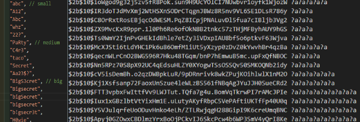
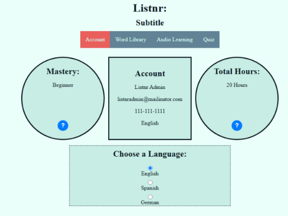
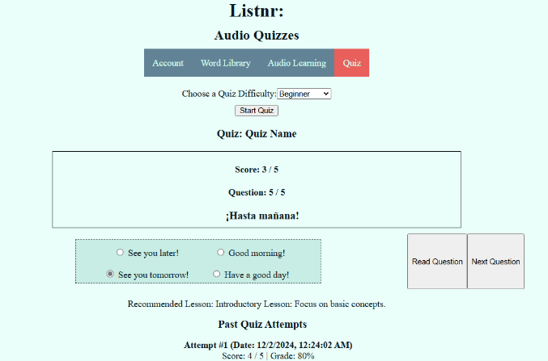

Computer Science Projects:
Password Hashing Program (CSI 4460-Information Security)
- Worked in group to create a basic password hashing function with a HTML interface.
-
HTML and CSS front-end with JavaScript back-end. SQL used for database integration.
-
Supported multiple different hasing programs and configurations. Primarily assisted in back-end

Listnr - Language Learning Program Demo (CSI 3370 - Software Engineering and Practice)
- Designed a web app geared at helping users learn basic language skills. Supported German and Spanish
- Web app interacted with PHP database to pull and store data throughout user interactions
- Worked on both front-end and back-end. Front-end uses HTML and CSS, backend uses JS and PHP.


Kresge Library Database (CSI 2999 - Sophmore Project)
- Built a program library program using the Kresge Library as a template.
-
Supported a basic interactive map, account features, checking out and returning books, reserving study rooms, search functionality, and a basic chat forum.
-
Primarily utilzed Java for the app and MySQL for the database architecture. Also integrated text to speech.